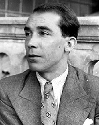

Teatro del 36 hasta el 75
El teatro en el exilio
El teatro de los autores exiliados continúa en tierras americanas gracias no solo a los autores prominentes como Rafael Alberti, Max Aub y Alejandro Casona, sino a actores y actrices como la republicana Margarita Xirgú
Los tres dramaturgos españoles en el exilio son Rafael Alberti, Max Aub y Alejandro Casona.
Rafael Alberti
| Obras | Argumento | |
|---|---|---|
| El adefesio | Tragedia con elementos esperpénticos y simbólicos.Trata sobre una tía que se erige tirana sobre sus sobrinas, llevando a una al suicido al coartarle el amor | |
| Noche de guerra en el Museo del Prado. | Drama político.Durante los bombardeos de Madrid, en 1936, en el sótano del Museo del Prado, los personajes de los cuadros de Goya cobran vida para luchar contra las tropas de Napoleón, que se identifican metafóricamente con los sitiadores franquistas. |
Max Aub

Encerrado en España debido al trabajo de su padre, acabó por pedir la nacionalidad, aunque con la guerra civil tuvo que irse al exilio, donde continuó su obra. Destaca sobre todas El rapto de Europa, un drama real que trata sobre cómo el Comité Americano de Socorro estableció la resistencia en Marsella y permitió que los intelectuales y artistas, entre los que se encontraba él mismo, huyeran de los totalitarismos nazi-fascistas.
Temática: todas versan sobre la Guerra Civil, los campos de concentración, el exilio, la guerra fría... Su teatro ofrece un
marcado carácter experimental y brinda una cuidada elaboración.
Rasgos dramáticos destacados: carácter documental,
estética realista y cierto tono épico.
Alejandro Casona

Antes del estilo destaca no solo como dramaturgo sino como director del Teatro del Pueblo, compañía que, como La barraca de Lorca, difundía las misiones pedagógicas.
En lo referente a su obra, bebe del teatro poético del Modernismo de Ruben Darío o del mismo Lorca. Además, si bien sus mejores obras son en el exilio (La dama del alba), este no supone una alteración sustancial de su estética o temática.
Su teatro, de poesía y misterio pero ajeno a la realidad contemporánea, presenta las características siguientes:
- Conflicto entre fantasía y realidad.
- Presencia de personajes alegóricos, como el Diablo (La barca sin pescador) o la Muerte (La dama del alba).
- Características teatrales notorias: profundo lirismo, lenguaje marcado por el simbolismo, lenguaje poético, propensión al melodrama, conflicto entre realidad y fantasía, el didactismo...